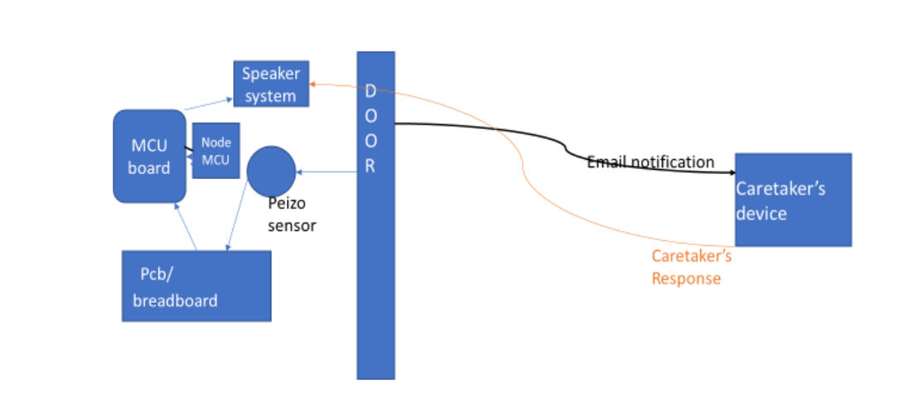
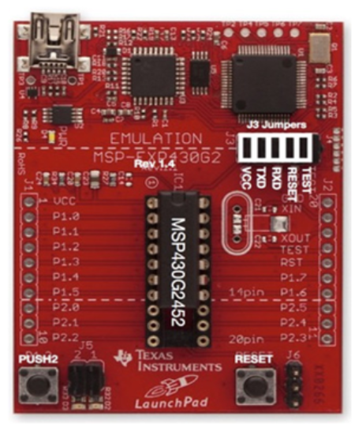

BLIND GUID AND SECURITY SYSTEM
A door is just an entrance to any specific space but a locked door
could also be a big barrier for every visually challenged people. The
main goal of this interactive door is providing a smart door by which a
caretaker for one or more blind people can communicate with them
upon the person in need of care accessing the door. It also has built-
in knock pattern-based door lock, room identification help in case of
public buildings, reminder management, Check in check out time
announcement . Here we use a low power microcontroller MSP430
which is used in satellites since it could function even at low voltage
in range about 1.4V. This provides a one way social network kind of
environment by which a caretaker or a doctor can even be hired for
the guidance and security to number of sight impaired people .

